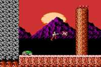

|

Review
Game Type: 2D Platform

Based loosely on the old Atari arcade game of the same name. Your
character does all the usual platformer stuff - he runs, bounces off
enemies, whacks them with a giant bladed yo-yo (please, that's so
cliche), etc. Most areas are side-view but a few overhead-view
sequences have been thrown in.
Gameplay: 80/100
The gameplay is for the most part decent. The control is very good
and the action is solid. Unfortunately most bosses are extremely cheap
and can only be beaten by means of brute force; it's annoying to have to build up experience before you can face them. The overhead-view sequences
are lame, too. But aside from a few poor examples of enemy design this
game is pretty worthwhile.
Graphics: 90/100
Rygar is unmatched graphically even by many later NES releases. It
was one of the first to feature parallax scrolling. The look is very
colorful, and all the areas have a solemn beauty. All this is
unfortunately hampered somewhat by profuse slowdown and flicker when
the screen gets crowded, though.
Sound: 70/100
Some of the tunes are rather inspiring, but others grate on the
nerves after a while. One song consists of four notes playing
over and over and over... Overall, though, it's not too bad. The sound
effects are decent, too.
Overall: 80/100
Although Rygar has its weak points it's one of the most pleasing
games on the NES in terms of gameplay and aesthetics. It probably
would've achieved classic status even if it wasn't released as early
as it was. Whenever I get into that questing mood this is usually the
game I plug in. (Right after Zelda.)
Hints
- Rygar Guide
- This simple guide has info on all the menus, items, and areas, plus
helpful hints to make beating the game easier.
|